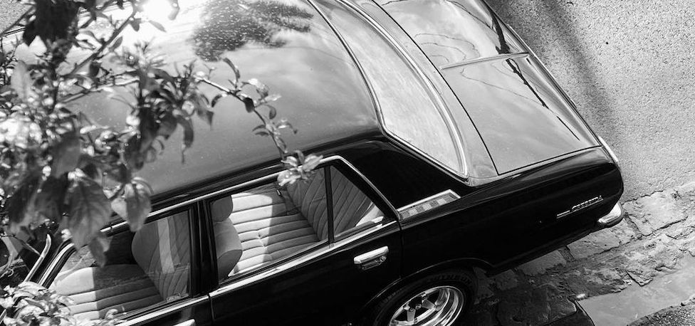
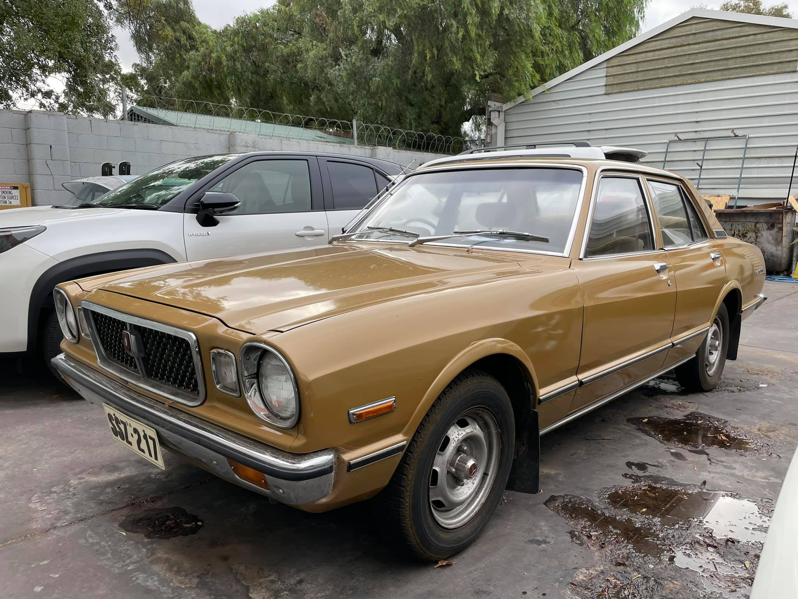
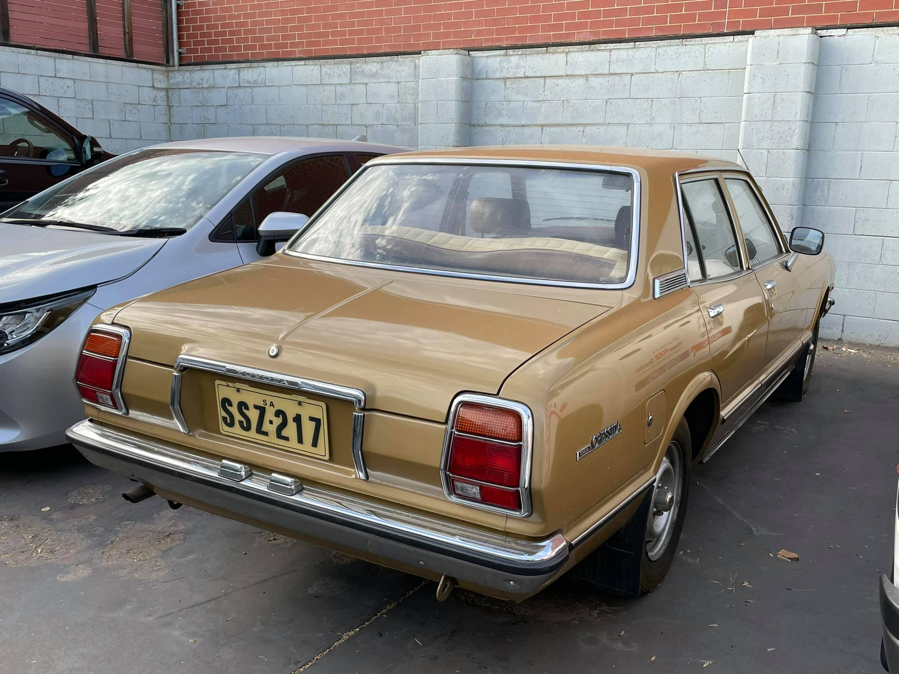
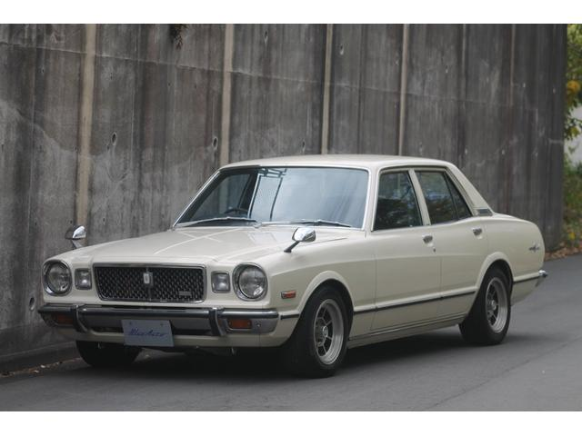
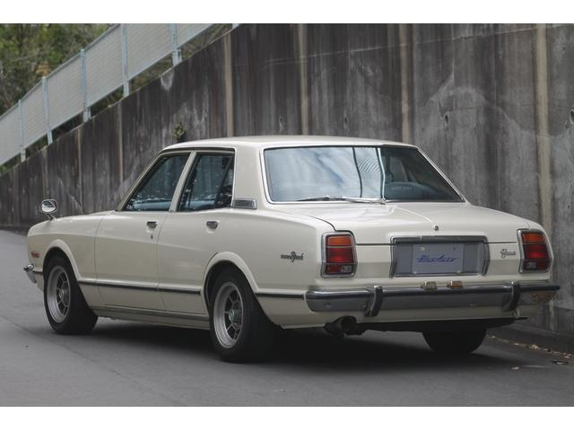
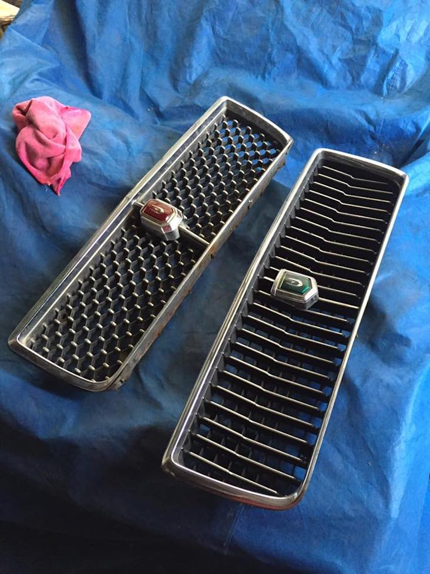
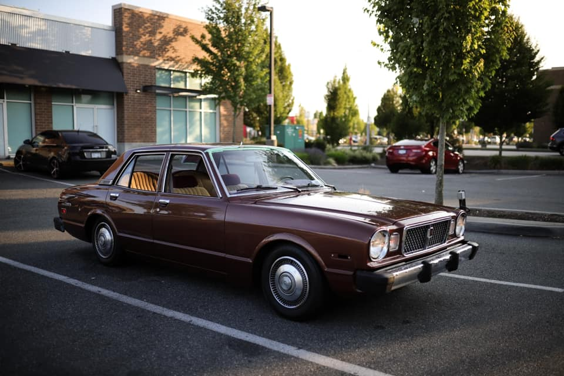
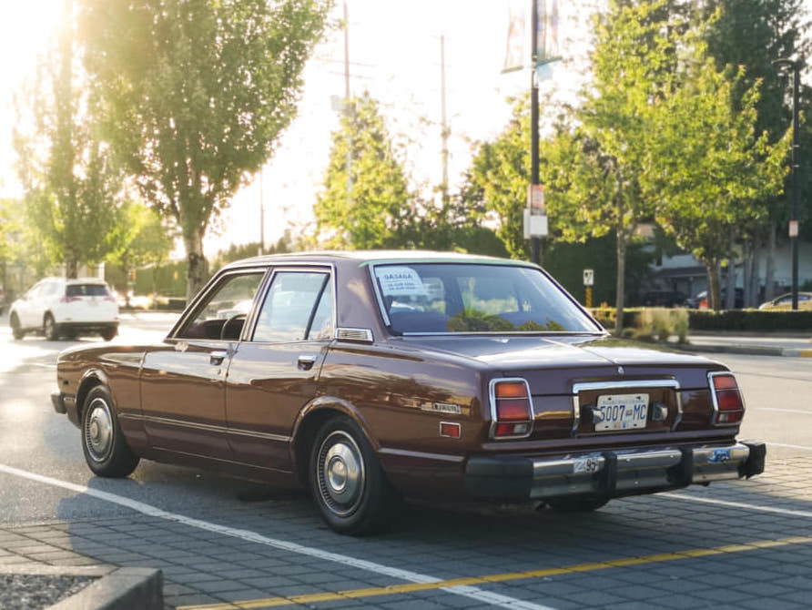

Exterior🔗

Table of Contents🔗
Key Information
- Series 1: 1976-1978
- Series 2: 1978-1980
Toyota/Toyopet Cressida/Mark II🔗
Series 1 - Australia🔗

Source: Wong Ka Leung

Source: Wong Ka Leung
Series 1 - Japan🔗
Unique parts
- Front and rear bumper metal overriders
- Powered fender mirrors
- 'Grande' grille badge
- 'EFI' grille badge
- Alternate grille also available
- License plate garnish
- 'Toyopet' boot trim
- 'Corona Mark II' rear guard badges


Note: Grande trim pictured
Source: Goonet

Source: Jack Nyland
Series 1 - North America🔗
Unique parts
- Front and rear bumper plastic overriders
- Park bench front and rear bumpers (different to Series 2 JP)
- Rear license plate light
- Side markers

Source: Meekzilla Paul

Note: Side moulding has been removed on this example
Source: Meekzilla Paul
Last update: 2021-09-03